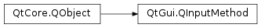

QInputMethod¶
Synopsis¶
Functions¶
- def
anchorRectangle() - def
cursorRectangle() - def
inputDirection() - def
inputItemClipRectangle() - def
inputItemRectangle() - def
inputItemTransform() - def
isAnimating() - def
isVisible() - def
keyboardRectangle() - def
locale() - def
setInputItemRectangle(rect) - def
setInputItemTransform(transform) - def
setVisible(visible)
Slots¶
Signals¶
- def
anchorRectangleChanged() - def
animatingChanged() - def
cursorRectangleChanged() - def
inputDirectionChanged(newDirection) - def
inputItemClipRectangleChanged() - def
keyboardRectangleChanged() - def
localeChanged() - def
visibleChanged()
Static functions¶
- def
queryFocusObject(query, argument)
Detailed Description¶
The
PySide2.QtGui.QInputMethodclass provides access to the active text input method.
PySide2.QtGui.QInputMethodis used by the text editors for integrating to the platform text input methods and more commonly by application views for querying various text input method-related information like virtual keyboard visibility and keyboard dimensions.Qt Quick also provides access to
PySide2.QtGui.QInputMethodin QML through Qt global object asQt.inputMethodproperty.
-
PySide2.QtGui.QInputMethod.Action¶ Indicates the kind of action performed by the user.
Constant Description QInputMethod.Click A normal click/tap QInputMethod.ContextMenu A context menu click/tap (e.g. right-button or tap-and-hold)
-
PySide2.QtGui.QInputMethod.anchorRectangle()¶ Return type: PySide2.QtCore.QRectF
-
PySide2.QtGui.QInputMethod.anchorRectangleChanged()¶
-
PySide2.QtGui.QInputMethod.animatingChanged()¶
-
PySide2.QtGui.QInputMethod.commit()¶ Commits the word user is currently composing to the editor. The function is mostly needed by the input methods with text prediction features and by the methods where the script used for typing characters is different from the script that actually gets appended to the editor. Any kind of action that interrupts the text composing needs to flush the composing state by calling the function, for example when the cursor is moved elsewhere.
-
PySide2.QtGui.QInputMethod.cursorRectangle()¶ Return type: PySide2.QtCore.QRectF
-
PySide2.QtGui.QInputMethod.cursorRectangleChanged()¶
-
PySide2.QtGui.QInputMethod.hide()¶ Requests virtual keyboard to close.
Normally applications should not need to call this function, keyboard should automatically close when the text editor loses focus, for example when the parent view is closed.
-
PySide2.QtGui.QInputMethod.inputDirection()¶ Return type: PySide2.QtCore.Qt.LayoutDirection
-
PySide2.QtGui.QInputMethod.inputDirectionChanged(newDirection)¶ Parameters: newDirection – PySide2.QtCore.Qt.LayoutDirection
-
PySide2.QtGui.QInputMethod.inputItemClipRectangle()¶ Return type: PySide2.QtCore.QRectF
-
PySide2.QtGui.QInputMethod.inputItemClipRectangleChanged()¶
-
PySide2.QtGui.QInputMethod.inputItemRectangle()¶ Return type: PySide2.QtCore.QRectFReturns the input item’s geometry in input item coordinates.
-
PySide2.QtGui.QInputMethod.inputItemTransform()¶ Return type: PySide2.QtGui.QTransformReturns the transformation from input item coordinates to the window coordinates.
-
PySide2.QtGui.QInputMethod.invokeAction(a, cursorPosition)¶ Parameters: - a –
PySide2.QtGui.QInputMethod.Action - cursorPosition –
PySide2.QtCore.int
Called by the input item when the word currently being composed is tapped by the user, as indicated by the action
aand the givencursorPosition. Input methods often use this information to offer more word suggestions to the user.- a –
-
PySide2.QtGui.QInputMethod.isAnimating()¶ Return type: PySide2.QtCore.bool
-
PySide2.QtGui.QInputMethod.isVisible()¶ Return type: PySide2.QtCore.bool
-
PySide2.QtGui.QInputMethod.keyboardRectangle()¶ Return type: PySide2.QtCore.QRectF
-
PySide2.QtGui.QInputMethod.keyboardRectangleChanged()¶
-
PySide2.QtGui.QInputMethod.locale()¶ Return type: PySide2.QtCore.QLocale
-
PySide2.QtGui.QInputMethod.localeChanged()¶
-
static
PySide2.QtGui.QInputMethod.queryFocusObject(query, argument)¶ Parameters: - query –
PySide2.QtCore.Qt.InputMethodQuery - argument – object
Return type: Send
queryto the current focus object with parametersargumentand return the result.- query –
-
PySide2.QtGui.QInputMethod.reset()¶ Resets the input method state. For example, a text editor normally calls this method before inserting a text to make widget ready to accept a text.
Input method resets automatically when the focused editor changes.
-
PySide2.QtGui.QInputMethod.setInputItemRectangle(rect)¶ Parameters: rect – PySide2.QtCore.QRectFSets the input item’s geometry to be
rect, in input item coordinates. This needs to be updated by the focused window like QQuickCanvas whenever item is moved inside the scene, or focus is changed.
-
PySide2.QtGui.QInputMethod.setInputItemTransform(transform)¶ Parameters: transform – PySide2.QtGui.QTransformSets the transformation from input item coordinates to window coordinates to be
transform. Item transform needs to be updated by the focused window like QQuickCanvas whenever item is moved inside the scene.
-
PySide2.QtGui.QInputMethod.setVisible(visible)¶ Parameters: visible – PySide2.QtCore.boolControls the keyboard visibility. Equivalent to calling
PySide2.QtGui.QInputMethod.show()(ifvisibleistrue) orPySide2.QtGui.QInputMethod.hide()(ifvisibleisfalse).
-
PySide2.QtGui.QInputMethod.show()¶ Requests virtual keyboard to open. If the platform doesn’t provide virtual keyboard the visibility remains false.
Normally applications should not need to call this function, keyboard should automatically open when the text editor gains focus.
-
PySide2.QtGui.QInputMethod.update(queries)¶ Parameters: queries – PySide2.QtCore.Qt.InputMethodQueriesCalled by the input item to inform the platform input methods when there has been state changes in editor’s input method query attributes. When calling the function
queriesparameter has to be used to tell what has changes, which input method can use to make queries for attributes it’s interested withPySide2.QtGui.QInputMethodQueryEvent.In particular calling update whenever the cursor position changes is important as that often causes other query attributes like surrounding text and text selection to change as well. The attributes that often change together with cursor position have been grouped in
Qt.ImQueryInputvalue for convenience.
-
PySide2.QtGui.QInputMethod.visibleChanged()¶
© 2018 The Qt Company Ltd. Documentation contributions included herein are the copyrights of their respective owners. The documentation provided herein is licensed under the terms of the GNU Free Documentation License version 1.3 as published by the Free Software Foundation. Qt and respective logos are trademarks of The Qt Company Ltd. in Finland and/or other countries worldwide. All other trademarks are property of their respective owners.